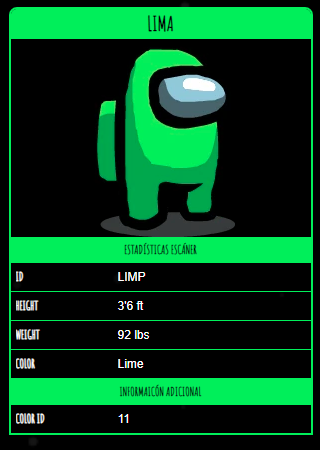

Lima

Lima
(también llamado "Verde Claro" por los fans) es uno de los
colores de Among Us
que los jugadores pueden personalizar.
Curiosidades
- Lima está en el menor número de obras de arte promocionales, estando solo en una.
- Lima no estaba en el juego en el lanzamiento y se agregó más tarde junto con Cian en v2019.4.24.
- En la sección "Cómo jugar", se muestra a Lima llamando a una Reunión de Emergencia después de que vean a Rojo.